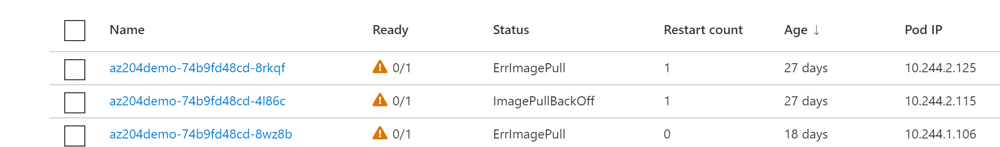
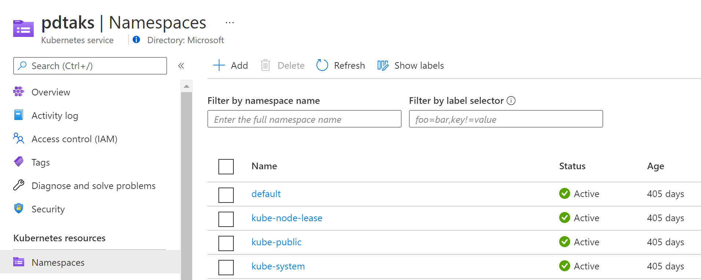
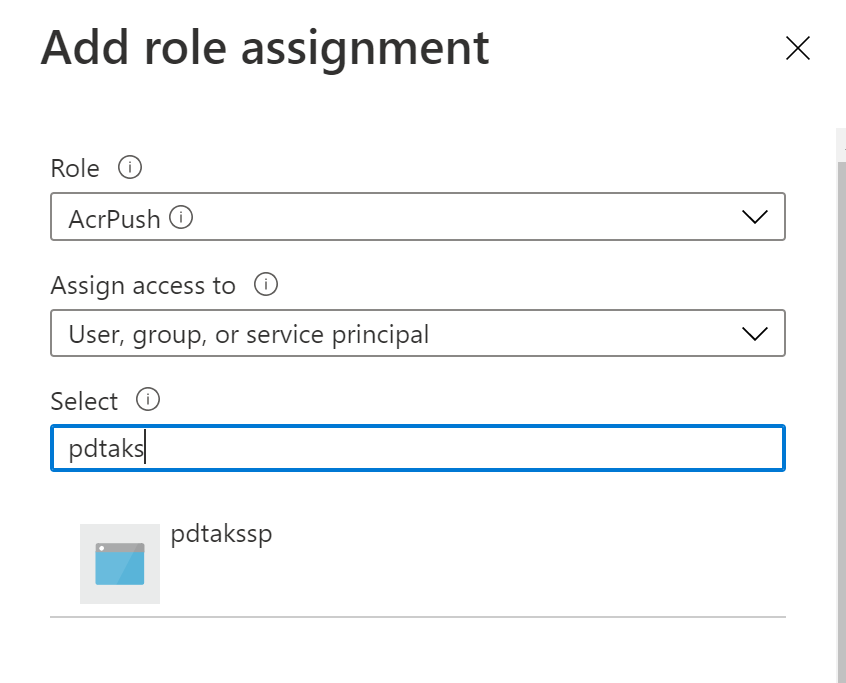
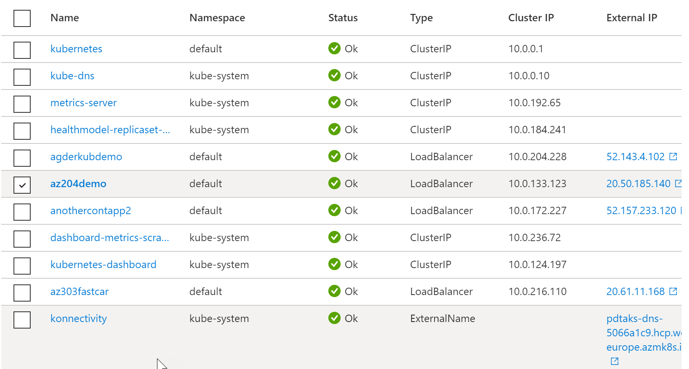

Hi all,
I’ve deployed me an AKS - Azure Kubernetes Service environment that I use in my Azure training class deliveries almost every week (yes, every AZ-course touches on AKS and Containers…)
The Problem
My AKS environment was running fine all this time (a bit over a year), allowing me to rely on existing deployed Kubernetes services, as well as building new services as a live demo. Until this morning, where all of a sudden, my own services didn’t start at all, but the kube-system services did. The error message I noticed for this service was ImagePullBackOff and ErrImagePull.

If you know a bit about Kubernetes and custom services (= the PODs that are running your containerized workloads), you know they are pulled from a Container Registry, in my case ACR - Azure Container Registry. Which means that in this scenario, there was probably something wrong with the communication between AKS and ACR. And more specifically, the AKS resource (or the Service Principal representing my AKS cluster) not having (no more having…) the correct permissions to reach ACR. Interesting is that the Kubernetes system containers are still running fine.

The fix
The fix consisted of a few different steps, but all in all, the steps made sense.
-
Check if the current AKS Service Principal was still valid
- After facing the problem, it struck me… an AKS Service Principal is valid for 1 year. Yes, my AKS cluster had been deployed for a bit more than year (405 days). So yes, my SP got expired

-
Although there is a way to renew the lifetime of a Service Principal, I couldn’t rely on that mechanism, as it only works for a non-expired-yet SP. Sounds normal to me. (In real life scenarios, you could automate this renewal from Azure Functions or Azure Automation)
-
This left me with the next option, creating a new Service Principal and linking it to the existing AKS Cluster Resource. Let’s go for that approach.
Get the resource ID for the existing AKS cluster
As we need to link a new Service Principal to the existing AKS Cluster, let’s check the resource ID by running the following:
|
|
Copy the output aside as we need it again later on.
Create a new Service Principal
To manually create a service principal with the Azure CLI, use the az ad sp create-for-rbac command. By default, a Service Principal gets assigned to your subscription with Contributor rights, but this will change anytime soon. To avoid any misusage, add the –skip-assignment parameter to make sure the SP resource doesn’t get any assignments yet:
|
|
Copy the output aside as we need it again later on.
Update the AKS Cluster with the new Service Principal
Allocate the output of the Service Principal and link it to the variable “SP_ID”:
|
|
Do the same for the Service Principal password: linking it to the variable “SP_SECRET”:
|
|
Followed by the following command, which runs the actual update:
|
|
After a few minutes, this process should be completed successfully.
Define ACRPush permissions (RBAC) for this new Service Principal
The AKS Cluster got updated with the new Service Principal, but this resource cannot connect to the Azure Container Registry yet, as it is lacking the permissions to do so. But this can be fixed as follows (using the Portal approach, although CLI or PS could also do the trick):
- From Azure Portal, browse to the Azure Container Registry you want to use
- Select Access Control (IAM)
- Select Add Role Assignment
- Role = ACRPush (Pull would only allow Pulling, Push allows both Pull and Push operations)
- Assign Access To = User, Group, Principal
- Select = search for the name of your Service Principal (pdtakssp in my example)

- Save the changes
Validate if the problem got fixed
AKS is pretty smart in retrying failed operations (it’s an Orchestrator after all ;). So let’s check if we fixed the problem.
- Browse to your AKS Cluster resource
- Select Services and Ingress
- All services, system and custom workloads, should be up and running again

Awesome, AKS did it! (With a little help from Azure Active Directory)
Lesson Learned
When deploying AKS Clusters in Azure, remember they get linked to a Service Principal (or Managed Identity alternatively), which is valid for 1 year, but allows for renewal (extend). If your Service Principal got expired, the fix is in creating a new Service Principal, linking it to the AKS Cluster and specifying AcrPush RBAC permissions for the Container Registry you want to use.
Now I’m going to check on that automatic renewal or at least updating my calendar to renew my Service Principal in time next year.
Take care for now, feel free to reach out on Twitter or peter @ pdtit dot be for questions.
thanks, Peter